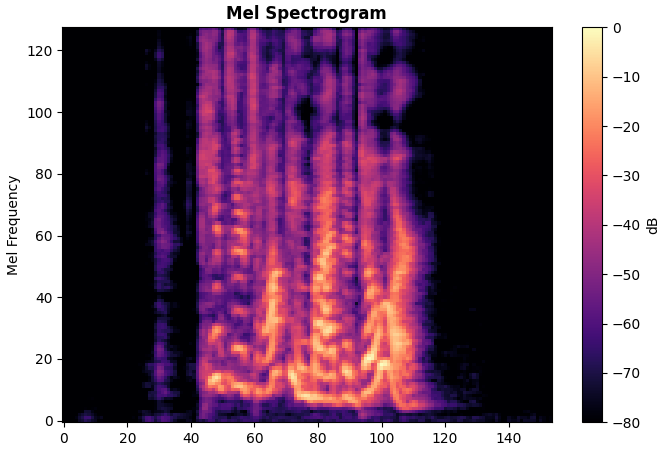
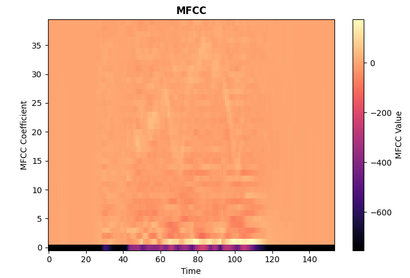
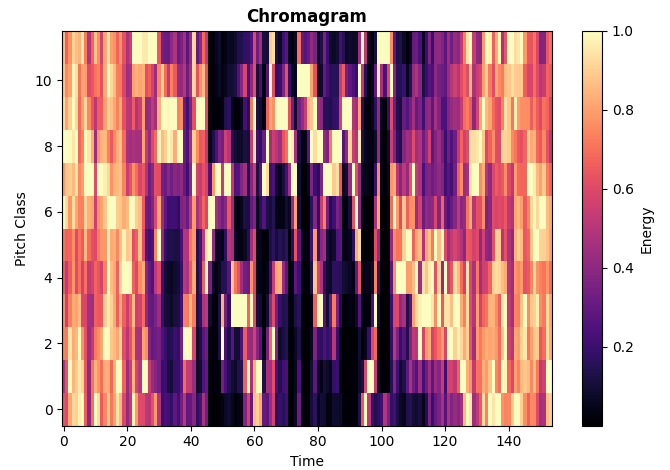
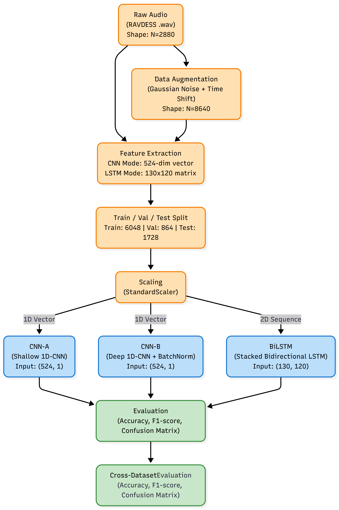

Each of the three sections below covers a distinct stage of the data pipeline, presented separately for clarity.
Transforming raw waveforms into structured numerical representations that capture the acoustic properties of emotion.
// Preprocessing pipeline — applied to every clip
// Audio overview — RAVDESS sample (emotion: Surprised)



data_sample_prep.png into web/assets/. For the best 4-panel layout, also crop the image into four quadrants (top-left, top-right, bottom-left, bottom-right) and save them as data_sample_prep_wave.png, data_sample_prep_melspec.png, data_sample_prep_mfcc.png, and data_sample_prep_chroma.png in the same folder. Alternatively, keep the full image and it will be shown in the MFCC panel with all four visible.
// The 524-dimensional feature vector
| Feature group | Description | Dims |
|---|---|---|
| MFCCs | Mean + Std of 40 coefficients | 80 |
| Deltas | Velocity of MFCCs — mean + std | 80 |
| Delta-Deltas | Acceleration of MFCCs — mean + std | 80 |
| Mel-Spectrogram | Mean + Std across 128 mel bands | 256 |
| Chroma | Mean + Std of 12 pitch classes | 24 |
| RMS Energy | Mean + Std of frame energy | 2 |
| ZCR | Mean + Std of zero-crossing rate | 2 |
| Total vector length | 524 | |
// Architectural distinction — two input modes
Artificially expanding the dataset from 2,880 to 8,640 recordings before any splitting to prevent data leakage.
// Full pipeline flowchart

CopyAudio_Processing_Pipeline*.png to web/assets/audio_pipeline_flowchart.png'">
Splitting, scaling, and reshaping the augmented dataset into the exact tensor shapes each architecture expects.
// Train / Validation / Test split — 70 / 10 / 20
The scaler computes mean and standard deviation from the 6,048 training samples and applies the same transform to validation and test sets. This is a strict requirement — fitting on all data would constitute a form of data leakage and artificially inflate test performance.
Two separate scalers are maintained: scaler_cnn_aug for the flat 524-dim vector, and scaler_lstm_aug for the flattened frame-level features (reshaped to (N×130, 120) before fitting, then restored).
The 1,728-sample test set is separated before any model training begins and never used for any hyperparameter decisions. All six models (three architectures × two training regimes) are evaluated on this identical held-out set, ensuring fair comparison across architectures.
A fixed random seed guarantees reproducible splits. The split is performed stratified by emotion class to preserve the balanced distribution of RAVDESS.